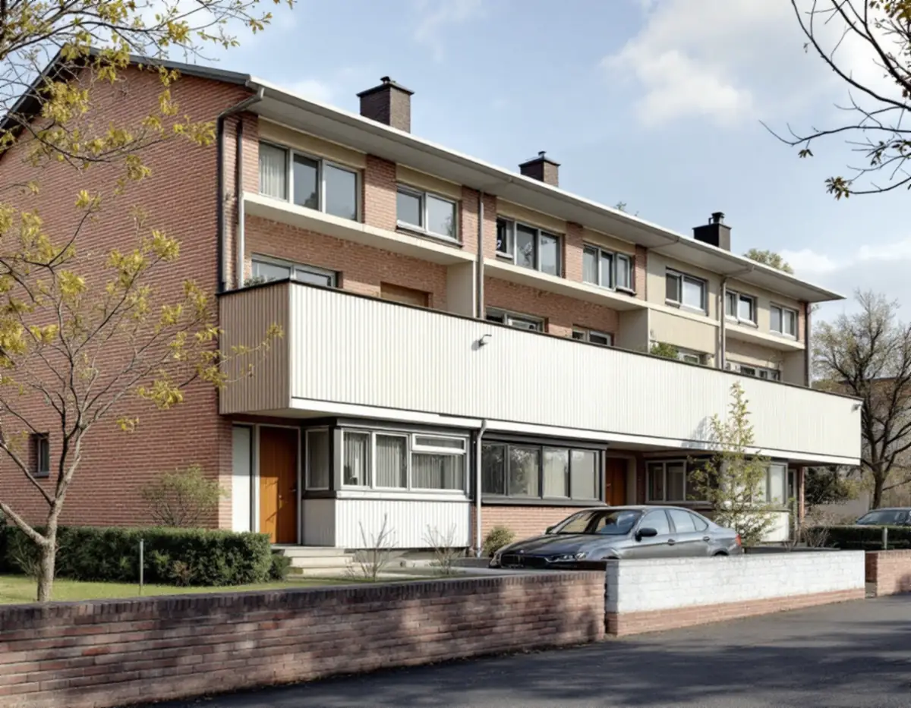
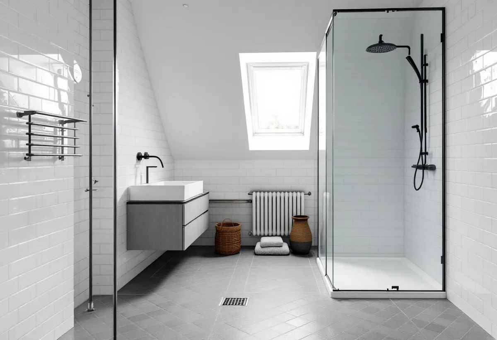
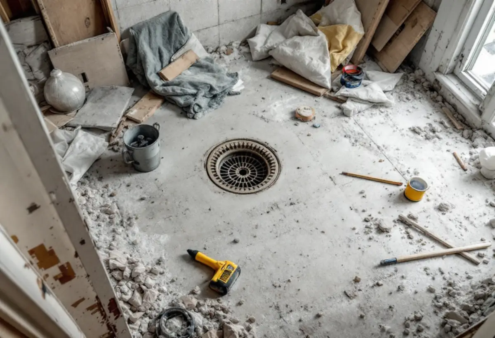

Platsbesök
Vi ser badrummet, golvbrunnen, avloppet och hur rummet ligger mot mark.
I Sätra, Vårberg, Skärholmen och Bredäng finns nästan 2 000 småhus med äganderätt, och i de här områdena tas nivåskillnader ofta upp med en souterrängvåning. Geal Entreprenad AB renoverar badrum i radhus och villor i Skärholmen och börjar med golvbrunnen och det som finns under kaklet.

Stadens områdesfakta för 2025 visar 1 976 småhus med äganderätt i Skärholmens stadsdelsområde: 577 i Vårberg, 543 i Skärholmen, 536 i Sätra och 320 i Bredäng. Stadens strategi för småhus- och villaområden berättar att Bredäng var den första stadsdelen som planerades i stor skala och började byggas 1962, följd av Sätra.
Strategin beskriver också att nivåskillnader i de här områdena ofta tas upp med en souterrängvåning, att tomterna är små och att husen är radhus, kedjehus, villor och atriumhus. Ligger badrummet i en souterrängvåning är det delvis under mark, och det påverkar hur vi planerar avlopp och golv.

Stockholm Vatten och Avfall förklarar att en backventil installeras på servisledningen för att hindra att avloppsvatten från ledningen i gatan tränger in i källaren genom golvbrunnar och andra avlopp. Du kan installera en på eget initiativ, men den kräver ingrepp i ledningssystemet, kan inte sättas in i alla anläggningar och är ditt ansvar att sköta.
Innan en backventil monteras måste du säkerställa att inga egna dagvattenanslutningar finns på ledningen, annars blir dagvattnet kvar i huset när ventilen stänger. Bolaget råder också att golvet i källaren bör vara av ett material som tål vatten och att takvatten från stuprör inte bör ledas till avloppsledningen.
Boverket skriver att det främst är byggnader uppförda mellan 1940 och 1970 som innehåller asbest, men att asbest användes i byggnader in på 1980-talet och att ett hus från perioden 1940–1980 sannolikt har asbest någonstans. Bland platserna nämns kakel- och klinkerfix och fog, socklar i badrum, mattor, lim under mattor och plattor och golvmassor.
Så länge asbesten är bunden är den ingen fara, men den frigörs när materialet sågas, slipas, borras eller skrapas. Provtagning och analys är det enda säkra sättet att veta, och därför tar vi prov innan vi river i ett badrum från den här tiden. Rotavdrag ges för att sanera asbest i samband med byggarbete men inte för att mäta den.
Enligt GVK:s branschregler ska en golvbrunn som är äldre än 1990 bytas ut vid renovering. GVK tar ett hus byggt 1978 som exempel: har våtrummet inte renoverats sedan dess saknar golvbrunnen antagligen klämring för att fixera en plastmatta och ska definitivt bytas.
Är åldern oklar finns ofta ett RSK-nummer, fabrikat eller modellnamn i själva brunnen, och vid tveksamhet rekommenderar GVK att byta. Om husens tak kan du läsa under takläggare i Skärholmen, och om tjänsten i stort under badrumsrenovering.
Har källaren drabbats av översvämning råder Stockholm Vatten och Avfall dig att först anmäla skadan till försäkringsbolaget och sedan rapportera händelsen till bolaget via dess formulär, eftersom det hjälper till att kartlägga ledningsnätet. Som fastighetsägare ansvarar du själv för att skydda din egendom mot översvämningar.
Bolagets checklista tar upp att rensa hängrännor, stuprör och brunnar, att ha tunga tättslutande föremål som sandsäckar redo att lägga över golvbrunnar och toaletter i källaren, att se över dräneringen och fuktskyddet på väggar under mark och att marken ska luta från huset. Vi går igenom det innan ett nytt badrum byggs i nedre planet.

Vi ser badrummet, golvbrunnen, avloppet och hur rummet ligger mot mark.
Kakelfix, fog och golvskikt provas för asbest när huset är från rätt tid.
Rivning, eventuell sanering, VVS och ytskikt står var för sig.
Gamla skikt rivs och golvbrunnen byts.
Tätskikt enligt branschreglerna, sedan kakel och klinker.
Vi går igenom badrummet och lämnar dokumentationen.
För ett småhus räknar Skatteverket bland annat installation av dusch, toalett och handfat, kakel- och klinkersättning och att dra och reparera vatten- och avloppsledningar som rotarbete. Asbestsanering i samband med byggarbetet ger också avdrag, men inte mätning av asbest.
Avdraget är högst 30 procent av arbetskostnaden och högst 50 000 kronor per person och år, och tillsammans med rutavdrag högst 75 000 kronor.
Rummets storlek, om asbest måste saneras, golvbrunnens och avloppets skick, om rummet ligger i nedre planet mot mark och vilka ytskikt du väljer. Efter ett gratis platsbesök får du ett skriftligt kostnadsförslag.
Tätskikt, golvbrunn, el, VVS och intyg.
Badrumsrenovering i Stockholm →Takbyte, takbesiktning och plåtarbeten.
Takläggare i Skärholmen →Ny tapet i hyresrätt och bostadsrätt.
Tapetsering i Skärholmen →